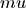
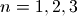
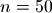

Mathematical functions¶
Mpmath implements the standard functions from Python’s math and cmath modules, for both real and complex numbers and with arbitrary precision. Many other functions are also available in mpmath, including commonly-used variants of standard functions (such as the alternative trigonometric functions sec, csc, cot), but also a large number of “special functions” such as the gamma function, the Riemann zeta function, error functions, Bessel functions, etc.
Contents
Constants¶
The predefined objects j (imaginary unit), inf (positive infinity) and nan (not-a-number) are shortcuts to mpc and mpf instances with these fixed values.
Mpmath supports arbitrary-precision computation of various common (and less common) mathematical constants. These constants are implemented as lazy objects that can be computed with any precision. Whenever the objects are used as function arguments or as operands in arithmetic operations, they automagically evaluate to the current working precision. A lazy number can be converted to a regular mpf using the unary + operator:
>>> from mpmath import *
>>> mp.dps = 15
>>> pi
<pi: 3.14159~>
>>> 2*pi
mpf('6.2831853071795862')
>>> +pi
mpf('3.1415926535897931')
>>> mp.dps = 40
>>> pi
<pi: 3.14159~>
>>> 2*pi
mpf('6.283185307179586476925286766559005768394338')
>>> +pi
mpf('3.141592653589793238462643383279502884197169')
- functions.pi¶
 , roughly equal to 3.141592654, represents the area of the unit
circle, the half-period of trigonometric functions, and many other
things in mathematics.
, roughly equal to 3.141592654, represents the area of the unit
circle, the half-period of trigonometric functions, and many other
things in mathematics.Mpmath can evaluate
to arbitrary precision:>>> from mpmath import * >>> mp.dps = 50 >>> print pi 3.1415926535897932384626433832795028841971693993751
This shows digits 99991-100000 of
:>>> mp.dps = 100000 >>> str(pi)[-10:] '5549362464'
Possible issues
pi always rounds to the nearest floating-point number when used. This means that exact mathematical identities involving
will generally not be preserved in floating-point
arithmetic. In particular, multiples of pi (except for
the trivial case 0*pi) are not the exact roots of
sin(), but differ roughly by the current epsilon:>>> mp.dps = 15 >>> sin(pi) mpf('1.2246467991473532e-16')
One solution is to use the sinpi() function instead:
>>> sinpi(1) mpf('0.0')
See the documentation of trigonometric functions for additional details.
- functions.degree¶
- functions.e¶
The transcendental number
 = 2.718281828... is the base of the
natural logarithm (ln()) and of the exponential function
(exp()).
= 2.718281828... is the base of the
natural logarithm (ln()) and of the exponential function
(exp()).Mpmath can be evaluate
to arbitrary precision:>>> mp.dps = 50 >>> print e 2.7182818284590452353602874713526624977572470937
This shows digits 99991-100000 of
:>>> mp.dps = 100000 >>> str(e)[-10:] '2100427165'
Possible issues
e always rounds to the nearest floating-point number when used, and mathematical identities involving
may not
hold in floating-point arithmetic. For example, ln(e)
might not evaluate exactly to 1.In particular, don’t use e**x to compute the exponential function. Use exp(x) instead; this is both faster and more accurate.
- functions.phi¶
- functions.euler¶
- functions.catalan¶
- functions.apery¶
- functions.khinchin¶
- functions.glaisher¶
Glaisher’s constant
 , also known as the Glaisher-Kinkelin
constant, is a number approximately equal to 1.282427129 that
sometimes appears in formulas related to gamma and zeta functions.
, also known as the Glaisher-Kinkelin
constant, is a number approximately equal to 1.282427129 that
sometimes appears in formulas related to gamma and zeta functions.It is defined as
 . Here
. Here  denotes the derivative of the Riemann zeta function (see
zeta()).
denotes the derivative of the Riemann zeta function (see
zeta()).Mpmath can evaluate Glaisher’s constant to arbitrary precision:
>>> from mpmath import * >>> mp.dps = 50 >>> print glaisher 1.282427129100622636875342568869791727767688927325
We can verify that the value computed by glaisher is correct using mpmath’s facilities for numerical differentiation and arbitrary evaluation of the zeta function:
>>> print exp(mpf(1)/12 - diff(zeta, -1)) 1.282427129100622636875342568869791727767688927325
Here is an example of an integral that can be evaluated in terms of Glaisher’s constant:
>>> mp.dps = 15 >>> print quad(lambda x: log(gamma(x)), [1, 1.5]) -0.0428537406502909 >>> print -0.5 - 7*log(2)/24 + log(pi)/4 + 3*log(glaisher)/2 -0.042853740650291
Mpmath computes Glaisher’s constant by applying Euler-Maclaurin summation to a slowly convergent series. The implementation is reasonably efficient up to about 10,000 digits. See the source code for additional details.
References: http://mathworld.wolfram.com/Glaisher-KinkelinConstant.html
Number parts¶
- mpmath.functions.fabs(x)¶
Returns the absolute value of
 ,
,  . Unlike abs(),
fabs() converts non-mpmath numbers (such as int)
into mpmath numbers:
. Unlike abs(),
fabs() converts non-mpmath numbers (such as int)
into mpmath numbers:>>> from mpmath import * >>> fabs(3) mpf('3.0') >>> fabs(-3) mpf('3.0') >>> fabs(3+4j) mpf('5.0')
- mpmath.functions.re(x)¶
Returns the real part of
,  . Unlike x.real,
re() converts to a mpmath number:
. Unlike x.real,
re() converts to a mpmath number:>>> from mpmath import * >>> re(3) mpf('3.0') >>> re(-1+4j) mpf('-1.0')
- mpmath.functions.im(x)¶
Returns the imaginary part of
,  . Unlike x.imag,
im() converts to a mpmath number:
. Unlike x.imag,
im() converts to a mpmath number:>>> from mpmath import * >>> im(3) mpf('0.0') >>> im(-1+4j) mpf('4.0')
- mpmath.functions.conj(x)¶
Returns the complex conjugate of
,  . Unlike
x.conjugate(), im() converts to a mpmath number:
. Unlike
x.conjugate(), im() converts to a mpmath number:>>> from mpmath import * >>> conj(3) mpf('3.0') >>> conj(-1+4j) mpc(real='-1.0', imag='-4.0')
- mpmath.functions.floor(x, **kwargs)¶
Computes the floor of
,  , defined as
the largest integer less than or equal to :
, defined as
the largest integer less than or equal to :>>> from mpmath import * >>> print floor(3.5) 3.0
Note: floor() returns a floating-point number, not a Python int. If
is too large to be
represented exactly at the present working precision, the
result will be rounded, not necessarily in the floor
direction.
- mpmath.functions.ceil(x, **kwargs)¶
Computes the ceiling of
,  , defined as
the smallest integer greater than or equal to :
, defined as
the smallest integer greater than or equal to :>>> from mpmath import * >>> print ceil(3.5) 4.0
Note: ceil() returns a floating-point number, not a Python int. If
is too large to be
represented exactly at the present working precision, the
result will be rounded, not necessarily in the ceiling
direction.
- mpmath.functions.arg(*args, **kwargs)¶
Computes the complex argument (phase) of
, defined as the
signed angle between the positive real axis and in the
complex plane:>>> from mpmath import * >>> mp.dps = 15 >>> print arg(3) 0.0 >>> print arg(3+3j) 0.785398163397448 >>> print arg(3j) 1.5707963267949 >>> print arg(-3) 3.14159265358979 >>> print arg(-3j) -1.5707963267949
The angle is defined to satisfy
 and
with the sign convention that a nonnegative imaginary part
results in a nonnegative argument.
and
with the sign convention that a nonnegative imaginary part
results in a nonnegative argument.The value returned by arg() is an mpf instance.
- mpmath.functions.modf(x, y)¶
Converts
and  to mpmath numbers and returns
to mpmath numbers and returns  .
For mpmath numbers, this is equivalent to x % y.
.
For mpmath numbers, this is equivalent to x % y.>>> from mpmath import * >>> mp.dps = 15 >>> print modf(100, pi) 2.61062773871641
You can use modf() to compute fractional parts of numbers:
>>> print modf(10.25, 1) 0.25
- mpmath.functions.ldexp(x, n)¶
Computes
 efficiently. No rounding is performed.
The argument must be a real floating-point number (or
possible to convert into one) and
efficiently. No rounding is performed.
The argument must be a real floating-point number (or
possible to convert into one) and  must be a Python int.
must be a Python int.>>> from mpmath import * >>> ldexp(1, 10) mpf('1024.0') >>> ldexp(1, -3) mpf('0.125')
- mpmath.functions.frexp(x)¶
Given a real number
, returns  with
with  ,
a Python integer, and such that
,
a Python integer, and such that  . No rounding is
performed.
. No rounding is
performed.>>> from mpmath import * >>> frexp(7.5) (mpf('0.9375'), 3)
Powers and logarithms¶
- mpmath.functions.sqrt(x, **kwargs)¶
sqrt(x) computes the principal square root of
,  .
For positive real numbers, the principal root is simply the
positive square root. For arbitrary complex numbers, the principal
square root is defined to satisfy
.
For positive real numbers, the principal root is simply the
positive square root. For arbitrary complex numbers, the principal
square root is defined to satisfy  .
The function thus has a branch cut along the negative half real axis.
.
The function thus has a branch cut along the negative half real axis.For all mpmath numbers x, calling sqrt(x) is equivalent to performing x**0.5.
Examples
Basic examples and limits:
>>> from mpmath import * >>> mp.dps = 15 >>> print sqrt(10) 3.16227766016838 >>> print sqrt(100) 10.0 >>> print sqrt(-4) (0.0 + 2.0j) >>> print sqrt(1+1j) (1.09868411346781 + 0.455089860562227j) >>> print sqrt(inf) +inf
Square root evaluation is fast at huge precision:
>>> mp.dps = 50000 >>> a = sqrt(3) >>> str(a)[-10:] '9329332814'
sqrt() supports interval arguments:
>>> mp.dps = 15 >>> print sqrt(mpi(16, 100)) [4.0, 10.0] >>> print sqrt(mpi(2)) [1.4142135623730949234, 1.4142135623730951455] >>> print sqrt(mpi(2)) ** 2 [1.9999999999999995559, 2.0000000000000004441]
- mpmath.functions.cbrt(x, **kwargs)¶
cbrt(x) computes the cube root of
,  . This
function is faster and more accurate than raising to a floating-point
fraction:
. This
function is faster and more accurate than raising to a floating-point
fraction:>>> from mpmath import * >>> mp.dps = 15 >>> 125**(mpf(1)/3) mpf('4.9999999999999991') >>> cbrt(125) mpf('5.0')
Every nonzero complex number has three cube roots. This function returns the cube root defined by
 where the
principal branch of the natural logarithm is used. Note that this
does not give a real cube root for negative real numbers:
where the
principal branch of the natural logarithm is used. Note that this
does not give a real cube root for negative real numbers:>>> print cbrt(-1) (0.5 + 0.866025403784439j)
- mpmath.functions.nthroot(*args, **kwargs)¶
nthroot(x, n) computes the principal
-th root of ,
 . Here must be an integer, and can be negative
(
. Here must be an integer, and can be negative
( is
is  ).
).For
 or
or  , using this function is equivalent to
calling sqrt() or cbrt(). In general,
nthroot(x, n) is defined to compute
, using this function is equivalent to
calling sqrt() or cbrt(). In general,
nthroot(x, n) is defined to compute  .
.nthroot() is implemented to use Newton’s method for small
. At high precision, this makes not much more
expensive than the regular exponentiation,  . For very large
, nthroot() falls back to use the exponential function.
. For very large
, nthroot() falls back to use the exponential function.nthroot() is faster and more accurate than raising to a floating-point fraction:
>>> from mpmath import * >>> mp.dps = 15 >>> 16807 ** (mpf(1)/5) mpf('7.0000000000000009') >>> nthroot(16807, 5) mpf('7.0')
- mpmath.functions.hypot(x, y)¶
- Computes the Euclidean norm of the vector
 , equal
to
, equal
to  . Both and must be real.
. Both and must be real.
- mpmath.functions.exp(x, **kwargs)¶
- Returns the exponential function of x
- mpmath.functions.ln(x, **kwargs)¶
- Computes the natural logarithm of ,
 .
See log() for additional documentation.
.
See log() for additional documentation.
- mpmath.functions.log(x, b=None)¶
Computes the base-
 logarithm of ,
logarithm of ,  . If is
unspecified, log() computes the natural (base ) logarithm
and is equivalent to ln(). In general, the base logarithm
is defined in terms of the natural logarithm as
. If is
unspecified, log() computes the natural (base ) logarithm
and is equivalent to ln(). In general, the base logarithm
is defined in terms of the natural logarithm as
 .
.By convention, we take
 .
.The natural logarithm is real if
 and complex if
and complex if  or if
is complex. The principal branch of the complex logarithm is
used, meaning that
or if
is complex. The principal branch of the complex logarithm is
used, meaning that  .
.Examples
Some basic values and limits:
>>> from mpmath import * >>> mp.dps = 15 >>> print log(1) 0.0 >>> print log(2) 0.693147180559945 >>> print log(1000,10) 3.0 >>> print log(4, 16) 0.5 >>> print log(j) (0.0 + 1.5707963267949j) >>> print log(-1) (0.0 + 3.14159265358979j) >>> print log(0) -inf >>> print log(inf) +inf
The natural logarithm is the antiderivative of
 :
:>>> print quad(lambda x: 1/x, [1, 5]) 1.6094379124341 >>> print log(5) 1.6094379124341 >>> print diff(log, 10) 0.1
The Taylor series expansion of the natural logarithm around
 has coefficients
has coefficients  :
:>>> nprint(taylor(log, 1, 7)) [0.0, 1.0, -0.5, 0.333333, -0.25, 0.2, -0.166667, 0.142857]
log() supports arbitrary precision evaluation:
>>> mp.dps = 50 >>> print log(pi) 1.1447298858494001741434273513530587116472948129153 >>> print log(pi, pi**3) 0.33333333333333333333333333333333333333333333333333 >>> mp.dps = 25 >>> print log(3+4j) (1.609437912434100374600759 + 0.9272952180016122324285125j)
- mpmath.functions.log10(x)¶
- Computes the base-10 logarithm of ,
 . log10(x)
is equivalent to log(x, 10).
. log10(x)
is equivalent to log(x, 10).
- mpmath.functions.power(x, y)¶
Converts
and to mpmath numbers and evaluates
 :
:>>> from mpmath import * >>> mp.dps = 30 >>> print power(2, 0.5) 1.41421356237309504880168872421
This shows the leading few digits of a large Mersenne prime (performing the exact calculation 2**43112609-1 and displaying the result in Python would be very slow):
>>> print power(2, 43112609)-1 3.16470269330255923143453723949e+12978188
- mpmath.functions.fibonacci(x, **kwargs)¶
fibonacci(n) computes the
-th Fibonacci number,  . The
Fibonacci numbers are defined by the recurrence
. The
Fibonacci numbers are defined by the recurrence  with the initial values
with the initial values  ,
,  . fibonacci()
extends this definition to arbitrary real and complex arguments
using the formula
. fibonacci()
extends this definition to arbitrary real and complex arguments
using the formula
where
 is the golden ratio. fibonacci() also uses this
continuous formula to compute for extremely large , where
calculating the exact integer would be wasteful.
is the golden ratio. fibonacci() also uses this
continuous formula to compute for extremely large , where
calculating the exact integer would be wasteful.For convenience, fib() is available as an alias for fibonacci().
Basic examples
Some small Fibonacci numbers are:
>>> from mpmath import * >>> mp.dps = 15 >>> for i in range(10): ... print fibonacci(i), ... 0.0 1.0 1.0 2.0 3.0 5.0 8.0 13.0 21.0 34.0 >>> print fibonacci(50) 12586269025.0
The recurrence for
extends backwards to negative :>>> for i in range(10): ... print fibonacci(-i), ... 0.0 1.0 -1.0 2.0 -3.0 5.0 -8.0 13.0 -21.0 34.0
Large Fibonacci numbers will be computed approximately unless the precision is set high enough:
>>> print fib(200) 2.8057117299251e+41 >>> mp.dps = 45 >>> print fib(200) 280571172992510140037611932413038677189525.0
fibonacci() can compute approximate Fibonacci numbers of stupendous size:
>>> mp.dps = 15 >>> print fibonacci(10**25) 3.49052338550226e+2089876402499787337692720
Real and complex arguments
The extended Fibonacci function is an analytic function. The property
 holds for arbitrary
holds for arbitrary  :
:>>> mp.dps = 15 >>> print fib(pi) 2.1170270579161 >>> print fib(pi-1) + fib(pi-2) 2.1170270579161 >>> print fib(3+4j) (-5248.51130728372 - 14195.962288353j) >>> print fib(2+4j) + fib(1+4j) (-5248.51130728372 - 14195.962288353j)
The Fibonacci function has infinitely many roots on the negative half-real axis. The first root is at 0, the second is close to -0.18, and then there are infinitely many roots that asymptotically approach
 :
:>>> print findroot(fib, -0.2) -0.183802359692956 >>> print findroot(fib, -2) -1.57077646820395 >>> print findroot(fib, -17) -16.4999999596115 >>> print findroot(fib, -24) -23.5000000000479
Mathematical relationships
For large
,  approaches the golden ratio:
approaches the golden ratio:>>> mp.dps = 50 >>> print fibonacci(101)/fibonacci(100) 1.6180339887498948482045868343656381177203127439638 >>> print phi 1.6180339887498948482045868343656381177203091798058
The sum of reciprocal Fibonacci numbers converges to an irrational number for which no closed form expression is known:
>>> mp.dps = 15 >>> print nsum(lambda n: 1/fib(n), [1, inf]) 3.35988566624318
Amazingly, however, the sum of odd-index reciprocal Fibonacci numbers can be expressed in terms of a Jacobi theta function:
>>> print nsum(lambda n: 1/fib(2*n+1), [0, inf]) 1.82451515740692 >>> print sqrt(5)*jtheta(2,0,(3-sqrt(5))/2)**2/4 1.82451515740692
Some related sums can be done in closed form:
>>> print nsum(lambda k: 1/(1+fib(2*k+1)), [0, inf]) 1.11803398874989 >>> print phi - 0.5 1.11803398874989 >>> f = lambda k:(-1)**(k+1) / sum(fib(n)**2 for n in range(1,k+1)) >>> print nsum(f, [1, inf]) 0.618033988749895 >>> print phi-1 0.618033988749895
References
- mpmath.functions.lambertw(*args, **kwargs)¶
The Lambert W function
 is defined as the inverse function
of
is defined as the inverse function
of  . In other words, the value of is such that
. In other words, the value of is such that
 for any complex number .
for any complex number .The Lambert W function is a multivalued function with infinitely many branches. Each branch gives a separate solution of the equation
. All branches are supported by
lambertw():- lambertw(z) gives the principal solution (branch 0)
- lambertw(z, k) gives the solution on branch

The Lambert W function has two partially real branches: the principal branch (
 ) is real for real
) is real for real  , and the
, and the
 branch is real for
branch is real for  . All branches except
have a logarithmic singularity at
. All branches except
have a logarithmic singularity at  .
.Basic examples
The Lambert W equation is the inverse of
:>>> from mpmath import * >>> mp.dps = 35 >>> w = lambertw(1) >>> print w 0.56714329040978387299996866221035555 >>> print w*exp(w) 1.0
Any branch gives a valid inverse:
>>> w = lambertw(1, k=3) >>> print w # doctest: +NORMALIZE_WHITESPACE (-2.8535817554090378072068187234910812 + 17.113535539412145912607826671159289j) >>> print w*exp(w) (1.0 + 3.5075477124212226194278700785075126e-36j)
Applications to equation-solving
The Lambert W function can give the value of the infinite power tower
 :
:>>> def tower(z, n): ... if n == 0: ... return z ... return z ** tower(z, n-1) ... >>> tower(0.5, 100) 0.641185744504986 >>> mp.dps = 50 >>> print -lambertw(-log(0.5))/log(0.5) 0.6411857445049859844862004821148236665628209571911
Properties
The Lambert W function grows roughly like the natural logarithm for large arguments:
>>> mp.dps = 15 >>> print lambertw(1000) 5.2496028524016 >>> print log(1000) 6.90775527898214 >>> print lambertw(10**100) 224.843106445119 >>> print log(10**100) 230.258509299405
The principal branch of the Lambert W function has a rational Taylor series expansion around
:>>> nprint(taylor(lambertw, 0, 6), 10) [0.0, 1.0, -1.0, 1.5, -2.666666667, 5.208333333, -10.8]
Some special values and limits are:
>>> mp.dps = 15 >>> print lambertw(0) 0.0 >>> print lambertw(1) 0.567143290409784 >>> print lambertw(e) 1.0 >>> print lambertw(inf) +inf >>> print lambertw(0, k=-1) -inf >>> print lambertw(0, k=3) -inf >>> print lambertw(inf, k=3) +inf
The
and branches join at  where
where
 for both branches. Since
for both branches. Since  can only be represented
approximately with mpmath numbers, evaluating the Lambert W function
at this point only gives
can only be represented
approximately with mpmath numbers, evaluating the Lambert W function
at this point only gives  approximately:
approximately:>>> mp.dps = 25 >>> print lambertw(-1/e, 0) -0.999999999999837133022867 >>> print lambertw(-1/e, -1) -1.00000000000016286697718
If
happens to round in the negative direction, there might be
a small imaginary part:>>> mp.dps = 15 >>> print lambertw(-1/e) (-1.0 + 8.22007971511612e-9j)
Possible issues
The evaluation can become inaccurate very close to the branch point at
. In some corner cases, lambertw() might currently
fail to converge, or can end up on the wrong branch.Algorithm
Halley’s iteration is used to invert
, using a first-order
asymptotic approximation ( or
or  ) as the initial
estimate.
) as the initial
estimate.The definition, implementation and choice of branches is based on Corless et al, “On the Lambert W function”, Adv. Comp. Math. 5 (1996) 329-359, available online here: http://www.apmaths.uwo.ca/~djeffrey/Offprints/W-adv-cm.pdf
TODO: use a series expansion when extremely close to the branch point at
and make sure that the proper branch is chosen there
Trigonometric functions¶
- mpmath.functions.degrees(x)¶
Converts the radian angle
to a degree angle:>>> from mpmath import * >>> mp.dps = 15 >>> print degrees(pi/3) 60.0
- mpmath.functions.radians(x)¶
Converts the degree angle
to radians:>>> from mpmath import * >>> mp.dps = 15 >>> print radians(60) 1.0471975511966
- mpmath.functions.cos(x, **kwargs)¶
- Returns the cosine of x
- mpmath.functions.sin(x, **kwargs)¶
- Returns the sine of x
- mpmath.functions.tan(x, **kwargs)¶
- Returns the tangent of x
- mpmath.functions.sec(x)¶
- Returns the secant of x, 1/cos(x)
- mpmath.functions.csc(x)¶
- Returns the cosecant of x, 1/sin(x)
- mpmath.functions.cot(x)¶
- Returns the cotangent of x, 1/tan(x)
- mpmath.functions.cospi(x, **kwargs)¶
Computes
 , more accurately than the expression
cos(pi*x):
, more accurately than the expression
cos(pi*x):>>> from mpmath import * >>> mp.dps = 15 >>> print cospi(10**10), cos(pi*(10**10)) 1.0 0.999999999997493 >>> print cospi(10**10+0.5), cos(pi*(10**10+0.5)) 0.0 1.59960492420134e-6
- mpmath.functions.sinpi(x, **kwargs)¶
Computes
 , more accurately than the expression
sin(pi*x):
, more accurately than the expression
sin(pi*x):>>> from mpmath import * >>> mp.dps = 15 >>> print sinpi(10**10), sin(pi*(10**10)) 0.0 -2.23936276195592e-6 >>> print sinpi(10**10+0.5), sin(pi*(10**10+0.5)) 1.0 0.999999999998721
- mpmath.functions.sinc(*args, **kwargs)¶
sinc(x) computes the unnormalized sinc function, defined as

See sincpi() for the normalized sinc function.
Simple values and limits include:
>>> from mpmath import * >>> mp.dps = 15 >>> print sinc(0) 1.0 >>> print sinc(1) 0.841470984807897 >>> print sinc(inf) 0.0
The integral of the sinc function is the sine integral Si:
>>> print quad(sinc, [0, 1]) 0.946083070367183 >>> print si(1) 0.946083070367183
- mpmath.functions.sincpi(*args, **kwargs)¶
sincpi(x) computes the normalized sinc function, defined as

Equivalently, we have
 .
.The normalization entails that the function integrates to unity over the entire real line:
>>> from mpmath import * >>> mp.dps = 15 >>> print quadosc(sincpi, [-inf, inf], period=2.0) 1.0
Like, sinpi(), sincpi() is evaluated accurately at its roots:
>>> print sincpi(10) 0.0
- mpmath.functions.acos(x, **kwargs)¶
- Returns the inverse cosine of x
- mpmath.functions.asin(x, **kwargs)¶
- Returns the inverse sine of x
- mpmath.functions.atan(x, **kwargs)¶
- Returns the inverse tangent of x
- mpmath.functions.atan2(y, x)¶
Computes the two-argument arctangent,
 ,
giving the signed angle between the positive -axis and the
point in the 2D plane. This function is defined for
real and only.
,
giving the signed angle between the positive -axis and the
point in the 2D plane. This function is defined for
real and only.The two-argument arctangent essentially computes
 , but accounts for the signs of both
and to give the angle for the correct quadrant. The
following examples illustrate the difference:
, but accounts for the signs of both
and to give the angle for the correct quadrant. The
following examples illustrate the difference:>>> from mpmath import * >>> mp.dps = 15 >>> print atan2(1,1), atan(1/1.) 0.785398163397448 0.785398163397448 >>> print atan2(1,-1), atan(1/-1.) 2.35619449019234 -0.785398163397448 >>> print atan2(-1,1), atan(-1/1.) -0.785398163397448 -0.785398163397448 >>> print atan2(-1,-1), atan(-1/-1.) -2.35619449019234 0.785398163397448
The angle convention is the same as that used for the complex argument; see arg().
- mpmath.functions.asec(x)¶
- Returns the inverse secant of x, acos(1/x)
- mpmath.functions.acsc(x)¶
- Returns the inverse cosecant of x, asin(1/x)
- mpmath.functions.acot(x)¶
- Returns the inverse cotangent of x, atan(1/x)
Hyperbolic functions¶
- mpmath.functions.cosh(x, **kwargs)¶
- Returns the hyperbolic cosine of x
- mpmath.functions.sinh(x, **kwargs)¶
- Returns the hyperbolic sine of x
- mpmath.functions.tanh(x, **kwargs)¶
- Returns the hyperbolic tangent of x
- mpmath.functions.sech(x)¶
- Returns the hyperbolic secant of x, 1/cosh(x)
- mpmath.functions.csch(x)¶
- Returns the hyperbolic cosecant of x, 1/sinh(x)
- mpmath.functions.coth(x)¶
- Returns the hyperbolic cotangent of x, 1/tanh(x)
- mpmath.functions.acosh(x, **kwargs)¶
- Returns the inverse hyperbolic cosine of x
- mpmath.functions.asinh(x, **kwargs)¶
- Returns the inverse hyperbolic sine of x
- mpmath.functions.atanh(x, **kwargs)¶
- Returns the inverse hyperbolic tangent of x
- mpmath.functions.asech(x)¶
- Returns the inverse hyperbolic secant of x, acosh(1/x)
- mpmath.functions.acsch(x)¶
- Returns the inverse hyperbolic cosecant of x, asinh(1/x)
- mpmath.functions.acoth(x)¶
- Returns the inverse hyperbolic cotangent of x, atanh(1/x)
Exponential integrals¶
- mpmath.functions.erf(x, **kwargs)¶
Computes the error function,
 . The error
function is the normalized antiderivative of the Gaussian function
. The error
function is the normalized antiderivative of the Gaussian function
 . More precisely,
. More precisely,
Basic examples
Simple values and limits include:
>>> from mpmath import * >>> mp.dps = 15 >>> print erf(0) 0.0 >>> print erf(1) 0.842700792949715 >>> print erf(-1) -0.842700792949715 >>> print erf(inf) 1.0 >>> print erf(-inf) -1.0
For large real
, approaches 1 very
rapidly:>>> print erf(3) 0.999977909503001 >>> print erf(5) 0.999999999998463
The error function is an odd function:
>>> nprint(taylor(erf, 0, 5)) [0.0, 1.12838, 0.0, -0.376126, 0.0, 0.112838]
erf() implements arbitrary-precision evaluation and supports complex numbers:
>>> mp.dps = 50 >>> print erf(0.5) 0.52049987781304653768274665389196452873645157575796 >>> mp.dps = 25 >>> print erf(1+j) (1.316151281697947644880271 + 0.1904534692378346862841089j)
Related functions
See also erfc(), which is more accurate for large
,
and erfi() which gives the antiderivative of
 .
.The Fresnel integrals fresnels() and fresnelc() are also related to the error function.
- mpmath.functions.erfc(x, **kwargs)¶
Computes the complementary error function,
 .
This function avoids cancellation that occurs when naively
computing the complementary error function as 1-erf(x):
.
This function avoids cancellation that occurs when naively
computing the complementary error function as 1-erf(x):>>> from mpmath import * >>> mp.dps = 15 >>> print 1 - erf(10) 0.0 >>> print erfc(10) 2.08848758376254e-45
erfc() works accurately even for ludicrously large arguments:
>>> print erfc(10**10) 4.3504398860243e-43429448190325182776
- mpmath.functions.erfi(*args, **kwargs)¶
Computes the imaginary error function,
 .
The imaginary error function is defined in analogy with the
error function, but with a positive sign in the integrand:
.
The imaginary error function is defined in analogy with the
error function, but with a positive sign in the integrand:
Whereas the error function rapidly converges to 1 as
grows,
the imaginary error function rapidly diverges to infinity.
The functions are related as
 for all complex
numbers .
for all complex
numbers .Examples
Basic values and limits:
>>> from mpmath import * >>> mp.dps = 15 >>> print erfi(0) 0.0 >>> print erfi(1) 1.65042575879754 >>> print erfi(-1) -1.65042575879754 >>> print erfi(inf) +inf >>> print erfi(-inf) -inf
Note the symmetry between erf and erfi:
>>> print erfi(3j) (0.0 + 0.999977909503001j) >>> print erf(3) 0.999977909503001 >>> print erf(1+2j) (-0.536643565778565 - 5.04914370344703j) >>> print erfi(2+1j) (-5.04914370344703 - 0.536643565778565j)
Possible issues
The current implementation of erfi() is much less efficient and accurate than the one for erf.
- mpmath.functions.erfinv(*args, **kwargs)¶
Computes the inverse error function, satisfying

This function is defined only for
 .
.Examples
Special values include:
>>> from mpmath import * >>> mp.dps = 15 >>> print erfinv(0) 0.0 >>> print erfinv(1) +inf >>> print erfinv(-1) -inf
The domain is limited to the standard interval:
>>> erfinv(2) Traceback (most recent call last): ... ValueError: erfinv(x) is defined only for -1 <= x <= 1
It is simple to check that erfinv() computes inverse values of erf() as promised:
>>> print erf(erfinv(0.75)) 0.75 >>> print erf(erfinv(-0.995)) -0.995
erfinv() supports arbitrary-precision evaluation:
>>> mp.dps = 50 >>> erf(3) mpf('0.99997790950300141455862722387041767962015229291260075') >>> erfinv(_) mpf('3.0')
A definite integral involving the inverse error function:
>>> mp.dps = 15 >>> print quad(erfinv, [0, 1]) 0.564189583547756 >>> print 1/sqrt(pi) 0.564189583547756
The inverse error function can be used to generate random numbers with a Gaussian distribution (although this is a relatively inefficient algorithm):
>>> nprint([erfinv(2*rand()-1) for n in range(6)]) # doctest: +SKIP [-0.586747, 1.10233, -0.376796, 0.926037, -0.708142, -0.732012]
- mpmath.functions.npdf(*args, **kwargs)¶
npdf(x, mu=0, sigma=1) evaluates the probability density function of a normal distribution with mean value
 and variance
and variance  .
.Elementary properties of the probability distribution can be verified using numerical integration:
>>> from mpmath import * >>> mp.dps = 15 >>> print quad(npdf, [-inf, inf]) 1.0 >>> print quad(lambda x: npdf(x, 3), [3, inf]) 0.5 >>> print quad(lambda x: npdf(x, 3, 2), [3, inf]) 0.5
See also ncdf(), which gives the cumulative distribution.
- mpmath.functions.ncdf(*args, **kwargs)¶
ncdf(x, mu=0, sigma=1) evaluates the cumulative distribution function of a normal distribution with mean value  and variance
.See also npdf(), which gives the probability density.
Elementary properties include:
>>> from mpmath import * >>> mp.dps = 15 >>> print ncdf(pi, mu=pi) 0.5 >>> print ncdf(-inf) 0.0 >>> print ncdf(+inf) 1.0
The cumulative distribution is the integral of the density function having identical mu and sigma:
>>> mp.dps = 15 >>> print diff(ncdf, 2) 0.053990966513188 >>> print npdf(2) 0.053990966513188 >>> print diff(lambda x: ncdf(x, 1, 0.5), 0) 0.107981933026376 >>> print npdf(0, 1, 0.5) 0.107981933026376
- mpmath.functions.ei(*args, **kwargs)¶
Computes the exponential integral or Ei-function,
 .
The exponential integral is defined as
.
The exponential integral is defined as
When the integration range includes
 , the exponential
integral is interpreted as providing the Cauchy principal value.
, the exponential
integral is interpreted as providing the Cauchy principal value.For real
, the Ei-function behaves roughly like
 .
.This function should not be confused with the family of related functions denoted by
 which are also called “exponential
integrals”.
which are also called “exponential
integrals”.Basic examples
Some basic values and limits are:
>>> from mpmath import * >>> mp.dps = 15 >>> print ei(0) -inf >>> print ei(1) 1.89511781635594 >>> print ei(inf) +inf >>> print ei(-inf) 0.0
For
, the defining integral can be evaluated
numerically as a reference:>>> print ei(-4) -0.00377935240984891 >>> print quad(lambda t: exp(t)/t, [-inf, -4]) -0.00377935240984891
ei() supports complex arguments and arbitrary precision evaluation:
>>> mp.dps = 50 >>> mp.dps = 50 >>> print ei(pi) 10.928374389331410348638445906907535171566338835056 >>> mp.dps = 25 >>> print ei(3+4j) (-4.154091651642689822535359 + 4.294418620024357476985535j)
Related functions
The exponential integral is closely related to the logarithmic integral. See li() for additional information.
The exponential integral is related to the hyperbolic and trigonometric integrals (see chi(), shi(), ci(), si()) similarly to how the ordinary exponential function is related to the hyperbolic and trigonometric functions:
>>> mp.dps = 15 >>> print ei(3) 9.93383257062542 >>> print chi(3) + shi(3) 9.93383257062542 >>> print ci(3j) - j*si(3j) - pi*j/2 (9.93383257062542 + 0.0j)
Beware that logarithmic corrections, as in the last example above, are required to obtain the correct branch in general. For details, see [1].
The exponential integral is also a special case of the hypergeometric function
 :
:>>> z = 0.6 >>> print z*hyper([1,1],[2,2],z) + (ln(z)-ln(1/z))/2 + euler 0.769881289937359 >>> print ei(z) 0.769881289937359
References
- Relations between Ei and other functions: http://functions.wolfram.com/GammaBetaErf/ExpIntegralEi/27/01/
- Abramowitz & Stegun, section 5: http://www.math.sfu.ca/~cbm/aands/page_228.htm
- mpmath.functions.li(*args, **kwargs)¶
Computes the logarithmic integral or li-function
 , defined by
, defined by
The logarithmic integral has a singularity at
.Note that there is a second logarithmic integral, the Li function, defined by

This “offset logarithmic integral” can be computed via li() using the simple identity
 .
.Examples
Some basic values and limits:
>>> from mpmath import * >>> mp.dps = 30 >>> print li(0) 0.0 >>> print li(1) -inf >>> print li(1) -inf >>> print li(2) 1.04516378011749278484458888919 >>> print findroot(li, 2) 1.45136923488338105028396848589 >>> print li(inf) +inf
The logarithmic integral can be evaluated for arbitrary complex arguments:
>>> mp.dps = 20 >>> print li(3+4j) (3.1343755504645775265 + 2.6769247817778742392j)
The logarithmic integral is related to the exponential integral:
>>> print ei(log(3)) 2.1635885946671919729 >>> print li(3) 2.1635885946671919729
The logarithmic integral grows like
 :
:>>> mp.dps = 15 >>> x = 10**100 >>> print x/log(x) 4.34294481903252e+97 >>> print li(x) 4.3619719871407e+97
The prime number theorem states that the number of primes less than
is asymptotic to . For example,
it is known that there are exactly 1,925,320,391,606,803,968,923
prime numbers less than 10^23 [1]. The logarithmic integral
provides a very accurate estimate:>>> print li(2) + li(10**23) 1.92532039161405e+21
A definite integral is:
>>> print quad(li, [0, 1]) -0.693147180559945 >>> print -ln(2) -0.693147180559945
References
- mpmath.functions.ci(*args, **kwargs)¶
- Cosine integral, Ci(z)
- mpmath.functions.si(*args, **kwargs)¶
- Sine integral, Si(z)
- mpmath.functions.chi(*args, **kwargs)¶
- Hyperbolic cosine integral, Chi(z)
- mpmath.functions.shi(*args, **kwargs)¶
- Hyperbolic sine integral, Shi(z)
- mpmath.functions.fresnels(*args, **kwargs)¶
- Fresnel integral S, S(z)
- mpmath.functions.fresnelc(*args, **kwargs)¶
- Fresnel integral C, C(z)
Gamma and related functions¶
- mpmath.functions.gamma(x, **kwargs)¶
- Returns the gamma function of x
- mpmath.functions.gammainc(*args, **kwargs)¶
gammainc(z, a=0, b=inf) computes the (generalized) incomplete gamma function with integration limits
![[a, b]](_images/math/da2e551d2ca2155b8d8f4935d2e9757722c9bab6.png) :
:
The generalized incomplete gamma function reduces to the following special cases when one or both endpoints are fixed:
 is the standard (“complete”)
gamma function,
is the standard (“complete”)
gamma function,  (available directly
as the mpmath function gamma())
(available directly
as the mpmath function gamma()) is the “upper” incomplete gamma
function,
is the “upper” incomplete gamma
function, 
 is the “lower” incomplete gamma
function,
is the “lower” incomplete gamma
function,  .
.
Of course, we have
 for all and .
for all and .Note however that some authors reverse the order of the arguments when defining the lower and upper incomplete gamma function, so one should be careful to get the correct definition.
If also given the keyword argument regularized=True, gammainc() computes the “regularized” incomplete gamma function

Examples
We can compare with numerical quadrature to verify that gammainc() computes the integral in the definition:
>>> from mpmath import * >>> mp.dps = 20 >>> print gammainc(2+3j, 4, 10) (0.009772126686277051606 - 0.077063730631298989245j) >>> print quad(lambda t: t**(2+3j-1) * exp(-t), [4, 10]) (0.009772126686277051606 - 0.077063730631298989245j)
The incomplete gamma functions satisfy simple recurrence relations:
>>> mp.dps = 15 >>> z = 3.5 >>> a = 2 >>> print gammainc(z+1, a), z*gammainc(z,a) + a**z*exp(-a) 10.6013029693353 10.6013029693353 >>> print gammainc(z+1,0,a), z*gammainc(z,0,a) - a**z*exp(-a) 1.03042542723211 1.03042542723211
If
is an integer, the recurrence reduces the incomplete gamma
function to  where
where  and
and
 are polynomials:
are polynomials:>>> mp.dps = 15 >>> print gammainc(1, 2), exp(-2) 0.135335283236613 0.135335283236613 >>> mp.dps = 50 >>> identify(gammainc(6, 1, 2), ['exp(-1)', 'exp(-2)']) '(326*exp(-1) + (-872)*exp(-2))'
The incomplete gamma functions reduce to functions such as the exponential integral Ei and the error function for special arguments:
>>> mp.dps = 15 >>> print gammainc(0, 4), -ei(-4) 0.00377935240984891 0.00377935240984891 >>> print gammainc(0.5, 0, 2), sqrt(pi)*erf(sqrt(2)) 1.6918067329452 1.6918067329452
- mpmath.functions.beta(x, y)¶
Computes the beta function,
 .
The beta function is also commonly defined by the integral
representation
.
The beta function is also commonly defined by the integral
representation
Examples
For integer and half-integer arguments where all three gamma functions are finite, the beta function becomes either rational number or a rational multiple of
:>>> from mpmath import * >>> mp.dps = 15 >>> print beta(5, 2) 0.0333333333333333 >>> print beta(1.5, 2) 0.266666666666667 >>> print 16*beta(2.5, 1.5) 3.14159265358979
Where appropriate, beta() evaluates limits. A pole of the beta function is taken to result in +inf:
>>> print beta(-0.5, 0.5) 0.0 >>> print beta(-3, 3) -0.333333333333333 >>> print beta(-2, 3) +inf >>> print beta(inf, 1) 0.0 >>> print beta(inf, 0) nan
beta() supports complex numbers and arbitrary precision evaluation:
>>> print beta(1, 2+j) (0.4 - 0.2j) >>> mp.dps = 25 >>> print beta(j,0.5) (1.079424249270925780135675 - 1.410032405664160838288752j) >>> mp.dps = 50 >>> print beta(pi, e) 0.037890298781212201348153837138927165984170287886464
Various integrals can be computed by means of the beta function:
>>> mp.dps = 15 >>> print quad(lambda t: t**2.5*(1-t)**2, [0, 1]) 0.0230880230880231 >>> print beta(3.5, 3) 0.0230880230880231 >>> print quad(lambda t: sin(t)**4 * sqrt(cos(t)), [0, pi/2]) 0.319504062596158 >>> print beta(2.5, 0.75)/2 0.319504062596158
- mpmath.functions.factorial(x, **kwargs)¶
- Returns the factorial of x
- mpmath.functions.binomial(n, k)¶
- Binomial coefficient, C(n,k) = n!/(k!*(n-k)!).
- mpmath.functions.gammaprod(a, b)¶
Given iterables
 and , gammaprod(a, b) computes the
product / quotient of gamma functions:
and , gammaprod(a, b) computes the
product / quotient of gamma functions:
Handling of poles
Unlike direct calls to gamma(), gammaprod() considers the entire product as a limit and evaluates this limit properly if any of the numerator or denominator arguments are nonpositive integers such that poles of the gamma function are encountered.
In particular:
- If there are equally many poles in the numerator and the denominator, the limit is a rational number times the remaining, regular part of the product.
- If there are more poles in the numerator, gammaprod() returns +inf.
- If there are more poles in the denominator, gammaprod() returns 0.
Examples
The reciprocal gamma function
 evaluated at
evaluated at  :
:>>> from mpmath import * >>> mp.dps = 15 >>> gammaprod([], [0]) mpf('0.0')
A limit:
>>> gammaprod([-4], [-3]) mpf('-0.25') >>> limit(lambda x: gamma(x-1)/gamma(x), -3, direction=1) mpf('-0.25') >>> limit(lambda x: gamma(x-1)/gamma(x), -3, direction=-1) mpf('-0.25')
- mpmath.functions.rf(x, n)¶
- Rising factorial (Pochhammer symbol), x^(n)
- mpmath.functions.ff(x, n)¶
- Falling factorial, x_(n)
- mpmath.functions.psi(m, z)¶
Gives the polygamma function of order m of z, psi^(m)(z). Special cases are the digamma function (psi0), trigamma function (psi1), tetragamma (psi2) and pentagamma (psi4) functions.
The parameter m should be a nonnegative integer.
- mpmath.functions.harmonic(x, **kwargs)¶
If
is an integer, harmonic(n) gives a floating-point
approximation of the -th harmonic number  , defined as
, defined as
The firrst few harmonic numbers are:
>>> from mpmath import * >>> mp.dps = 15 >>> for n in range(8): ... print n, harmonic(n) ... 0 0.0 1 1.0 2 1.5 3 1.83333333333333 4 2.08333333333333 5 2.28333333333333 6 2.45 7 2.59285714285714
The infinite harmonic series
 diverges:
diverges:>>> print harmonic(inf) +inf
harmonic() is evaluated using the digamma function rather than by summing the harmonic series term by term. It can therefore be computed quickly for arbitrarily large
, and even for
nonintegral arguments:>>> print harmonic(10**100) 230.835724964306 >>> print harmonic(0.5) 0.613705638880109 >>> print harmonic(3+4j) (2.24757548223494 + 0.850502209186044j)
harmonic() supports arbitrary precision evaluation:
>>> mp.dps = 50 >>> print harmonic(11) 3.0198773448773448773448773448773448773448773448773 >>> print harmonic(pi) 1.8727388590273302654363491032336134987519132374152
The harmonic series diverges, but at a glacial pace. It is possible to calculate the exact number of terms required before the sum exceeds a given amount, say 100:
>>> mp.dps = 50 >>> v = 10**findroot(lambda x: harmonic(10**x) - 100, 10) >>> print v 15092688622113788323693563264538101449859496.864101 >>> v = int(ceil(v)) >>> print v 15092688622113788323693563264538101449859497 >>> print harmonic(v-1) 99.999999999999999999999999999999999999999999942747 >>> print harmonic(v) 100.000000000000000000000000000000000000000000009
Riemann zeta function, Bernoulli numbers and related¶
- mpmath.functions.zeta(x, **kwargs)¶
zeta(s) computes the Riemann zeta function,
 .
The Riemann zeta function is defined for
.
The Riemann zeta function is defined for  by
by
and for
 by analytic continuation. It has a pole
at
by analytic continuation. It has a pole
at  .
.Examples
Some exact values of the zeta function are:
>>> from mpmath import * >>> mp.dps = 15 >>> print zeta(2) 1.64493406684823 >>> print pi**2 / 6 1.64493406684823 >>> print zeta(0) -0.5 >>> print zeta(-1) -0.0833333333333333 >>> print zeta(-2) 0.0
zeta() supports arbitrary precision evaluation and complex arguments:
>>> mp.dps = 50 >>> print zeta(pi) 1.1762417383825827588721504519380520911697389900217 >>> print zeta(1+2j) # doctest: +NORMALIZE_WHITESPACE (0.5981655697623817367034568491742186771747764868876 - 0.35185474521784529049653859679690026505229177886045j)
The Riemann zeta function has so-called nontrivial zeros on the critical line
 :
:>>> mp.dps = 15 >>> print findroot(zeta, 0.5+14j) (0.5 + 14.1347251417347j) >>> print findroot(zeta, 0.5+21j) (0.5 + 21.0220396387716j) >>> print findroot(zeta, 0.5+25j) (0.5 + 25.0108575801457j)
For large positive
 , rapidly approaches 1:
, rapidly approaches 1:>>> print zeta(30) 1.00000000093133 >>> print zeta(100) 1.0 >>> print zeta(inf) 1.0
The following series converges and in fact has a simple closed form value:
>>> print nsum(lambda k: zeta(k)-1, [2, inf]) 1.0
Algorithm
The primary algorithm is Borwein’s algorithm for the Dirichlet eta function. Three separate implementations are used: for general real arguments, general complex arguments, and for integers. The reflection formula is applied to arguments in the negative half-plane. For very large real arguments, either direct summation or the Euler prime product is used.
It should be noted that computation of
gets very slow
when is far away from the real axis.References
- mpmath.functions.altzeta(x, **kwargs)¶
Computes the Dirichlet eta function,
 , also known as the
alternating zeta function. This function is defined in analogy
with the Riemann zeta function as providing the sum of the
alternating series
, also known as the
alternating zeta function. This function is defined in analogy
with the Riemann zeta function as providing the sum of the
alternating series
Note that
 is the alternating harmonic series.
The eta function unlike the Riemann zeta function is an entire
function, having a finite value for all complex .
is the alternating harmonic series.
The eta function unlike the Riemann zeta function is an entire
function, having a finite value for all complex .The alternating and non-alternating zeta functions are related via the simple formula

This formula can be used to define
for  ,
where the series diverges.
,
where the series diverges.Examples
Some special values are:
>>> from mpmath import * >>> mp.dps = 15 >>> print altzeta(1) 0.693147180559945 >>> print altzeta(0) 0.5 >>> print altzeta(-1) 0.25 >>> print altzeta(-2) 0.0
An example of a sum that can be computed more accurately and efficiently via altzeta() than via numerical summation:
>>> sum(-(-1)**n / n**2.5 for n in range(1, 100)) 0.86720495150398402 >>> print altzeta(2.5) 0.867199889012184
At positive even integers, the Dirichlet eta function evaluates to a rational multiple of a power of
:>>> print altzeta(2) 0.822467033424113 >>> print pi**2/12 0.822467033424113
Like the Riemann zeta function,
, approaches 1
as approaches positive infinity, although it does
so from below rather than from above:>>> print altzeta(30) 0.999999999068682 >>> print altzeta(inf) 1.0 >>> altzeta(1000, rounding='d') mpf('0.99999999999999989') >>> altzeta(1000, rounding='u') mpf('1.0')
References
- mpmath.functions.bernoulli(n)¶
Computes the nth Bernoulli number,
 , for any integer
, for any integer  .
.The Bernoulli numbers are rational numbers, but this function returns a floating-point approximation. To obtain an exact fraction, use bernfrac() instead.
Examples
Numerical values of the first few Bernoulli numbers:
>>> from mpmath import * >>> mp.dps = 15 >>> for n in range(15): ... print n, bernoulli(n) ... 0 1.0 1 -0.5 2 0.166666666666667 3 0.0 4 -0.0333333333333333 5 0.0 6 0.0238095238095238 7 0.0 8 -0.0333333333333333 9 0.0 10 0.0757575757575758 11 0.0 12 -0.253113553113553 13 0.0 14 1.16666666666667
Bernoulli numbers can be approximated with arbitrary precision:
>>> mp.dps = 50 >>> print bernoulli(100) -2.8382249570693706959264156336481764738284680928013e+78
Arbitrarily large
are supported:>>> mp.dps = 15 >>> print bernoulli(10**20 + 2) 3.09136296657021e+1876752564973863312327
The Bernoulli numbers are related to the Riemann zeta function at integer arguments:
>>> print -bernoulli(8) * (2*pi)**8 / (2*fac(8)) 1.00407735619794 >>> print zeta(8) 1.00407735619794
Algorithm
For small
( ) bernoulli() uses a recurrence
formula due to Ramanujan. All results in this range are cached,
so sequential computation of small Bernoulli numbers is
guaranteed to be fast.
) bernoulli() uses a recurrence
formula due to Ramanujan. All results in this range are cached,
so sequential computation of small Bernoulli numbers is
guaranteed to be fast.For larger
, is evaluated in terms of the Riemann zeta
function.
- mpmath.functions.bernfrac(n)¶
Returns a tuple of integers
 such that
such that  exactly,
where denotes the -th Bernoulli number. The fraction is
always reduced to lowest terms. Note that for
exactly,
where denotes the -th Bernoulli number. The fraction is
always reduced to lowest terms. Note that for  and odd,
and odd,
 , and
, and  is returned.
is returned.Examples
The first few Bernoulli numbers are exactly:
>>> for n in range(15): ... p, q = bernfrac(n) ... print n, "%s/%s" % (p, q) ... 0 1/1 1 -1/2 2 1/6 3 0/1 4 -1/30 5 0/1 6 1/42 7 0/1 8 -1/30 9 0/1 10 5/66 11 0/1 12 -691/2730 13 0/1 14 7/6
This function works for arbitrarily large
:>>> p, q = bernfrac(10**4) >>> print q 2338224387510 >>> print len(str(p)) 27692 >>> mp.dps = 15 >>> print mpf(p) / q -9.04942396360948e+27677 >>> print bernoulli(10**4) -9.04942396360948e+27677
Note: bernoulli() computes a floating-point approximation directly, without computing the exact fraction first. This is much faster for large
.Algorithm
bernfrac() works by computing the value of
numerically
and then using the von Staudt-Clausen theorem [1] to reconstruct
the exact fraction. For large , this is significantly faster than
computing  recursively with exact arithmetic.
The implementation has been tested for
recursively with exact arithmetic.
The implementation has been tested for  up to
up to  .
.In practice, bernfrac() appears to be about three times slower than the specialized program calcbn.exe [2]
References
- MathWorld, von Staudt-Clausen Theorem: http://mathworld.wolfram.com/vonStaudt-ClausenTheorem.html
- The Bernoulli Number Page: http://www.bernoulli.org/
- mpmath.functions.stieltjes(n)¶
For a nonnegative integer
, stieltjes(n) computes the
-th Stieltjes constant  , defined as the
-th coefficient in the Laurent series expansion of the
Riemann zeta function around the pole at . That is,
we have:
, defined as the
-th coefficient in the Laurent series expansion of the
Riemann zeta function around the pole at . That is,
we have:
Examples
The zeroth Stieltjes constant is just Euler’s constant
 :
:>>> from mpmath import * >>> mp.dps = 15 >>> print stieltjes(0) 0.577215664901533
Some more values are:
>>> print stieltjes(1) -0.0728158454836767 >>> print stieltjes(10) 0.000205332814909065 >>> print stieltjes(30) 0.00355772885557316
An alternative way to compute
 :
:>>> print diff(extradps(25)(lambda x: 1/(x-1) - zeta(x)), 1) -0.0728158454836767
stieltjes() supports arbitrary precision evaluation, and caches computed results:
>>> mp.dps = 50 >>> print stieltjes(2) -0.0096903631928723184845303860352125293590658061013408
Algorithm
The calculation is done using numerical differentiation for very small
(currently ).For larger
, integration of the Riemann zeta function is
used. The method should work for any and precision, but
soon becomes quite slow in practice. The code has been tested
with  and 100 digit precision; that computation took
about 2 minutes.References
Hypergeometric functions¶
- mpmath.functions.hyper(a_s, b_s, z)¶
Hypergeometric function pFq:
[ a_1, a_2, ..., a_p | ] pFq [ | z ] [ b_1, b_2, ..., b_q | ]The parameter lists a_s and b_s may contain real or complex numbers. Exact rational parameters can be given as tuples (p, q).
- mpmath.functions.hyp0f1(a, z)¶
- Hypergeometric function 0F1. hyp0f1(a,z) is equivalent to hyper([], [a], z); see documentation for hyper() for more information.
- mpmath.functions.hyp1f1(a, b, z)¶
- Hypergeometric function 1F1. hyp1f1(a,b,z) is equivalent to hyper([a], [b], z); see documentation for hyper() for more information.
- mpmath.functions.hyp2f1(a, b, c, z)¶
- Hypergeometric function 2F1. hyp2f1(a,b,c,z) is equivalent to hyper([a,b], [c], z); see documentation for hyper() for more information.
- mpmath.functions.jacobi(*args, **kwargs)¶
- Jacobi polynomial P_n^(a,b)(x).
- mpmath.functions.legendre(*args, **kwargs)¶
- Legendre polynomial P_n(x).
- mpmath.functions.chebyt(*args, **kwargs)¶
- Chebyshev polynomial of the first kind T_n(x).
- mpmath.functions.chebyu(*args, **kwargs)¶
- Chebyshev polynomial of the second kind U_n(x).
Elliptic functions¶
- mpmath.functions.agm(*args, **kwargs)¶
agm(a, b) computes the arithmetic-geometric mean of a and b, defined as the limit of the iteration a, b = (a+b)/2, sqrt(a*b).
This function can be called with a single argument, computing agm(a,1) = agm(1,a).
Examples
A formula for gamma(1/4):
>>> from mpmath import * >>> mp.dps = 15 >>> print gamma(0.25) 3.62560990822191 >>> print sqrt(2*sqrt(2*pi**3)/agm(1,sqrt(2))) 3.62560990822191
Possible issues
agm() may not give an appropriate branch for complex arguments a and b.
- mpmath.functions.ellipe(*args, **kwargs)¶
- Complete elliptic integral of the second kind, E(m). Note that the argument is the parameter m = k^2, not the modulus k.
- mpmath.functions.ellipk(*args, **kwargs)¶
- Complete elliptic integral of the first kind, K(m). Note that the argument is the parameter m = k^2, not the modulus k.
- mpmath.elliptic.jtheta(n, z, q)¶
Computes the Jacobi theta function
 , where
, where
 . The theta functions are functions of two
variables:
. The theta functions are functions of two
variables:- is the argument, an arbitrary real or complex number
 is the nome, which must be a real or complex number
in the unit disk (i.e.
is the nome, which must be a real or complex number
in the unit disk (i.e.  )
)
One also commonly encounters the notation
 in the literature. The variable
in the literature. The variable  is called the parameter
and can be converted to a nome using the formula
is called the parameter
and can be converted to a nome using the formula
 . Note the condition requires
. Note the condition requires
 ; i.e. Jacobi theta functions are defined for
in the upper half plane.
; i.e. Jacobi theta functions are defined for
in the upper half plane.Other notations are also in use. For example, some authors use the single-argument form
 . Depending on context,
this can mean jtheta(n, 0, x), jtheta(n, x, q), or possibly
something else. Needless to say, it is a good idea to cross-check
the definitions when working with theta functions.
. Depending on context,
this can mean jtheta(n, 0, x), jtheta(n, x, q), or possibly
something else. Needless to say, it is a good idea to cross-check
the definitions when working with theta functions.Definition
The four Jacobi theta functions as implemented by jtheta() are defined by the following infinite series:

For
 , these series converge very quickly, so the
Jacobi theta functions can efficiently be evaluated to high
precision.
, these series converge very quickly, so the
Jacobi theta functions can efficiently be evaluated to high
precision.Examples and basic properties
Considered as functions of
, the Jacobi theta functions may be
viewed as generalizations of the ordinary trigonometric functions
cos and sin. They are periodic functions:>>> from mpmath import * >>> mp.dps = 15 >>> print jtheta(1, 0.1, 1/5.) 0.117756191842059 >>> print jtheta(1, 0.1 + 2*pi, 1/5.) 0.117756191842059
Indeed, the series defining the theta functions are essentially trigonometric Fourier series. The coefficients can be retrieved using fourier():
>>> nprint(fourier(lambda x: jtheta(2, x, 0.5), [-pi, pi], 4)) ([0.0, 1.68179, 0.0, 0.420448, 0.0], [0.0, 0.0, 0.0, 0.0, 0.0])
The Jacobi theta functions are also so-called quasiperiodic functions of
and , meaning that for fixed ,
and  are the same
except for an exponential factor:
are the same
except for an exponential factor:>>> tau = 0.3*j >>> q = exp(pi*j*tau) >>> z = 10 >>> print jtheta(4, z+tau*pi, q) (-0.682420280786035 + 1.5266839997214j) >>> print -exp(-2*j*z)/q * jtheta(4, z, q) (-0.682420280786035 + 1.5266839997214j)
The Jacobi theta functions satisfy a huge number of other functional equations, such as the following identity (valid for any
):>>> q = 0.3 >>> print jtheta(3,0,q)**4 6.82374408935276 >>> print jtheta(2,0,q)**4 + jtheta(4,0,q)**4 6.82374408935276
Extensive listings of identities satisfied by the Jacobi theta functions can be found in standard reference works.
The Jacobi theta functions are related to the gamma function for special arguments:
>>> print jtheta(3, 0, exp(-pi)) 1.08643481121331 >>> print pi**(1/4.) / gamma(3/4.) 1.08643481121331
jtheta() supports arbitrary precision evaluation and complex arguments:
>>> mp.dps = 50 >>> print jtheta(4, sqrt(2), 0.5) 2.0549510717571539127004115835148878097035750653737 >>> mp.dps = 25 >>> print jtheta(4, 1+2j, (1+j)/5) (7.180331760146805926357227 - 1.634292858119162417301859j)
Possible issues
For
 or
or  , jtheta() raises
ValueError. This exception is also raised for
, jtheta() raises
ValueError. This exception is also raised for  extremely
close to 1 (or equivalently very close to 0), since the
series would converge too slowly:
extremely
close to 1 (or equivalently very close to 0), since the
series would converge too slowly:>>> jtheta(1, 10, 0.99999999 * exp(0.5*j)) Traceback (most recent call last): ... ValueError: abs(q) > Q_LIM = 1.000000
- mpmath.elliptic.djtheta(n, z, q, nd=1)¶
For an integer
 , computes the
, computes the  :th derivative with
respect to of the Jacobi theta function
:th derivative with
respect to of the Jacobi theta function  :
:>>> from mpmath import * >>> mp.dps = 15 >>> print djtheta(3, 7, 0.2) -0.795947847483158 >>> print diff(lambda x: jtheta(3, x, 0.2), 7) -0.795947847483158
For additional details, see jtheta().
- mpmath.elliptic.jsn(u, m)¶
- Implementation of the jacobi elliptic sn function in term of jacoby theta functions. u is any complex number, m must be in the unit disk
- mpmath.elliptic.jcn(u, m)¶
- Implementation of the jacobi elliptic cn function in term of theta functions. u is any complex number, m must be in the unit disk
- mpmath.elliptic.jdn(u, m)¶
- Implementation of the jacobi elliptic dn function in term of theta functions. u is any complex number, m must be in the unit disk